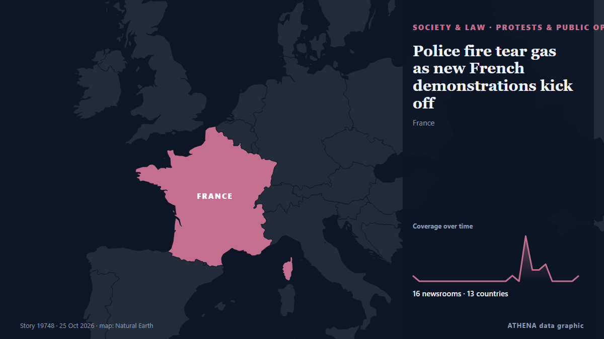

Police fire tear gas as new French demonstrations kick off

Authorities deploy 70,000 security personnel amid fears of renewed violence. de Euractiv
Relayé de façon indépendante par 16 médias dans 13 pays depuis le 22 oct. ; premier à l'annoncer : TASS (English) ; la couverture faiblit. ATHENA juge le risque accru (4.8/10), surtout en raison de la gravité des dommages décrits et de sa portée géographique et sectorielle. La confiance est de 92 % (élevée) : 16 médias indépendants le confirment, avec une fiabilité moyenne des sources de 76 %. Médias par pays : Russie (2), Arabie saoudite (2), Nigeria (2). Couverture : du 22 oct. au 25 oct., 75 heures.
Pourquoi c'est important: Les changements juridiques et politiques modifient droits, obligations et services publics pour les personnes concernées.
Ce qui a changé : 14 nouveaux articles de 14 rédactions dans les 24 heures jusqu'au 25 oct..
Les titres sont affichés en anglais, tels que publiés.
En un coup d'œil
Sélectionné, noté et rédigé par la méthodologie publiée d'ATHENA. Aucun rédacteur n'intervient sur un événement en particulier. Comment il est produit ›
| 22 Oct 07:23 UTC | 1 |
|---|---|
| 22 Oct 10:23 UTC | 0 |
| 22 Oct 13:23 UTC | 0 |
| 22 Oct 16:23 UTC | 0 |
| 22 Oct 19:23 UTC | 0 |
| 22 Oct 22:23 UTC | 0 |
| 23 Oct 01:23 UTC | 0 |
| 23 Oct 04:23 UTC | 0 |
| 23 Oct 07:23 UTC | 0 |
| 23 Oct 10:23 UTC | 0 |
| 23 Oct 13:23 UTC | 0 |
| 23 Oct 16:23 UTC | 0 |
| 23 Oct 19:23 UTC | 0 |
| 23 Oct 22:23 UTC | 0 |
| 24 Oct 01:23 UTC | 0 |
| 24 Oct 04:23 UTC | 1 |
| 24 Oct 07:23 UTC | 0 |
| 24 Oct 10:23 UTC | 8 |
| 24 Oct 13:23 UTC | 2 |
| 24 Oct 16:23 UTC | 2 |
| 24 Oct 19:23 UTC | 3 |
| 24 Oct 22:23 UTC | 0 |
| 25 Oct 01:23 UTC | 0 |
| 25 Oct 04:23 UTC | 0 |
| 25 Oct 07:23 UTC | 0 |
| 25 Oct 10:23 UTC | 1 |
| 22 Oct 07:25 UTC | 0.0 |
|---|---|
| 24 Oct 12:52 UTC | 2.1 |
| 24 Oct 12:54 UTC | 4.7 |
| 25 Oct 10:50 UTC | 4.8 |
Pourquoi ces chiffres
Importance
Risque
Confiance
La couverture : qui l'a annoncé, et quand
titre tel que publié · ouvre l'original- TASS (English) · RussieHeating season formally kicks off in Europe
- The Local France · FranceFresh clashes at protests, but France avoids second day of widespread violence
- Arab News · Arabie saouditeClashes break out in Paris and other French cities amid fresh protests
- Euractiv · BelgiquePolice fire tear gas as new French demonstrations kick off
- Vanguard · NigeriaPolice fire tear gas as new French demonstrations kick off
- Dawn · PakistanPolice fire tear gas as new French demonstrations kick off
- TASS (English) · RussiePolice in Lyon disperse student protest with tear gas
- The Daily Star — page reader · BangladeshPolice fire tear gas as new French protests kick off
- Channels TV · NigeriaPolice Fire Tear Gas As New French Protests Kick Off
- CNA (Channel NewsAsia) · SingapourFrench protests kick off amid heavy security blanket
- Anadolu Agency (English) · TurquieAround 2,000 protesters defy ban in France's Lyon, police use tear gas
- Hespress English · MarocFrench protests kick off amid heavy security blanket
- to vima · GrèceParis Protest Draws Thousands – Police Report Calm; Tear Gas Fired in Other Cities
- BBC News · Royaume-UniFireworks and tear gas as protesters and riot police clash in Paris
- Gulf News · Émirats arabes unisClashes break out in Paris, other French cities amid fresh protests
- Business Recorder · PakistanFrench police fire tear gas during fresh protests
- Asharq Al-Awsat (English) · Arabie saouditeFrance’s Le Pen Launches Presidential Bid as Protests Rattle the Nation